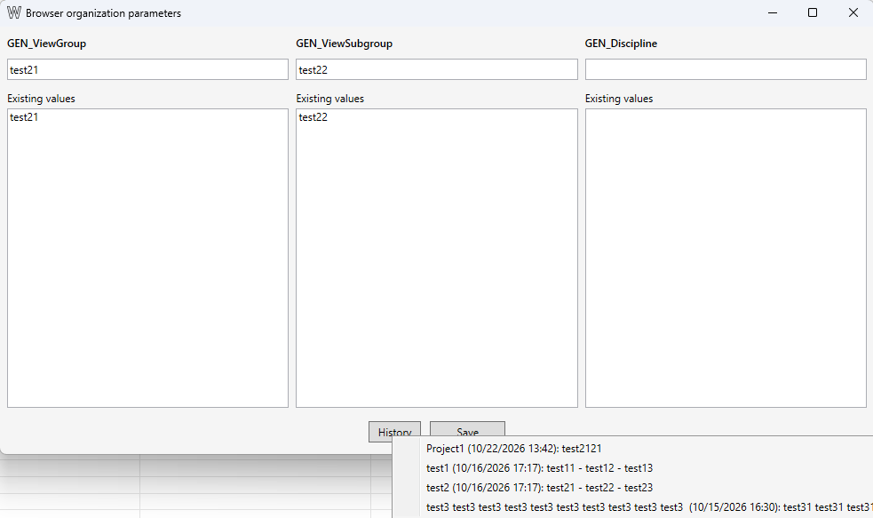

Subproyectos y vistas 3D
Tabla de contenidos
El comando muestra los subproyectos de usuario, las vistas 3D asociadas y datos sobre su contenido. Permite localizar subproyectos sin vistas, comprobar la visibilidad, crear vistas aisladas y eliminar vistas que ya no se necesitan.
Consultar subproyectos y vistas
La tabla muestra los subproyectos de usuario, su contenido y las vistas 3D asociadas. Se excluyen las plantillas de vista.
- Workset — nombre del subproyecto.
- Elem. Cat. — cantidad de elementos y categorías del subproyecto. Pase el cursor para ver el desglose por categoría y usuario.
- View — nombre de la vista 3D asociada. Haga doble clic en la fila para abrirla.
- Visibility — cantidad y nombres de los subproyectos visibles. El texto atenuado indica que la vista está aislada correctamente: solo está visible el subproyecto asociado. Pase el cursor para ver la lista completa.
- Title on Sheet, View template, Created by, Changed by — descripción de la vista, plantilla asignada, creador y último usuario que la modificó.
- Las columnas adicionales muestran los valores de los parámetros de organización del Navegador de proyectos, si están configurados en el documento.

Asociación de vistas con subproyectos
La asociación se determina por el nombre: el nombre de la vista debe comenzar por el nombre completo del subproyecto. Si varios subproyectos coinciden con el comienzo del nombre de la vista, se utiliza el nombre coincidente más largo. Por tanto, cambiar el nombre de una vista puede modificar su asociación.
Buscar subproyectos sin vistas
Haga clic en Select lonely worksets para seleccionar las filas de los subproyectos que no tienen una vista 3D asociada. También puede seleccionar las filas manualmente. La selección determina para qué subproyectos se pueden crear vistas.
Crear vistas 3D aisladas
- Seleccione uno o varios subproyectos. Use Select lonely worksets para seleccionar rápidamente los que no tienen vistas.
- Si lo necesita, configure los parámetros de organización del Navegador de proyectos. Consulte la sección siguiente.
- Haga clic en Create N views. El comando crea una vista 3D para cada subproyecto seleccionado y oculta los demás subproyectos de usuario en cada vista.
Si el nombre de una vista ya está en uso, se añade un sufijo numérico al nombre del subproyecto.
Crear subproyectos
Haga clic en Create worksets… e introduzca un nombre por línea.
Marque Create a 3D view for each new workset para crear una vista aislada para cada subproyecto nuevo. Desmarque la opción para crear subproyectos sin crear vistas.
Al crear subproyectos en un documento sin worksharing, se activa worksharing y se borra el historial de deshacer. No se podrán deshacer con Ctrl+Z las acciones realizadas antes de activarlo.

Configurar parámetros de organización del Navegador de proyectos
Haga clic en el botón del lápiz, junto a los valores actuales de los parámetros. Los campos dependen de los parámetros de organización de vistas del documento activo.
Introduzca los valores que se aplicarán a las vistas nuevas. Existing values muestra los valores no vacíos que ya se usan en las vistas 3D del documento. Si deja un campo vacío, el parámetro no se modifica.
Haga clic en Save para guardar los valores actuales para este documento. Use History para cargar valores anteriores de este documento o valores guardados para otro documento. Estos parámetros solo se aplican a las vistas nuevas; no se modifican las vistas existentes.

Buscar vistas con visibilidad incorrecta
Haga clic en Select bad views para seleccionar las filas en las que la vista muestra subproyectos distintos del que tiene asociado. La columna Visibility indica qué subproyectos están visibles en cada vista. Haga doble clic en una fila para abrir la vista o elimínela si ya no se necesita.
Matriz de visibilidad
Haga clic en Matrix para comparar la visibilidad de los subproyectos en las vistas 3D asociadas. Las filas representan las vistas y las columnas, los subproyectos visibles en al menos una de ellas. La matriz muestra la visibilidad actual, pero no la modifica.
- Una celda verde con ✓ indica que el subproyecto asociado a la vista está visible.
- Una celda roja con ✗ indica que está visible otro subproyecto.
- Una celda vacía indica que el subproyecto está oculto en esa vista.

Eliminar vistas 3D
Seleccione las filas de las vistas que quiera eliminar y haga clic en Delete N views. El comando elimina las vistas 3D seleccionadas, pero no los subproyectos. Revit advierte que quizá no sea posible deshacer la operación con Ctrl+Z.
Registro de trabajo
2026-10-22: Se rediseñó el comando. En lugar de importar subproyectos desde Excel, ahora permite gestionar los subproyectos y sus vistas 3D asociadas desde la interfaz.